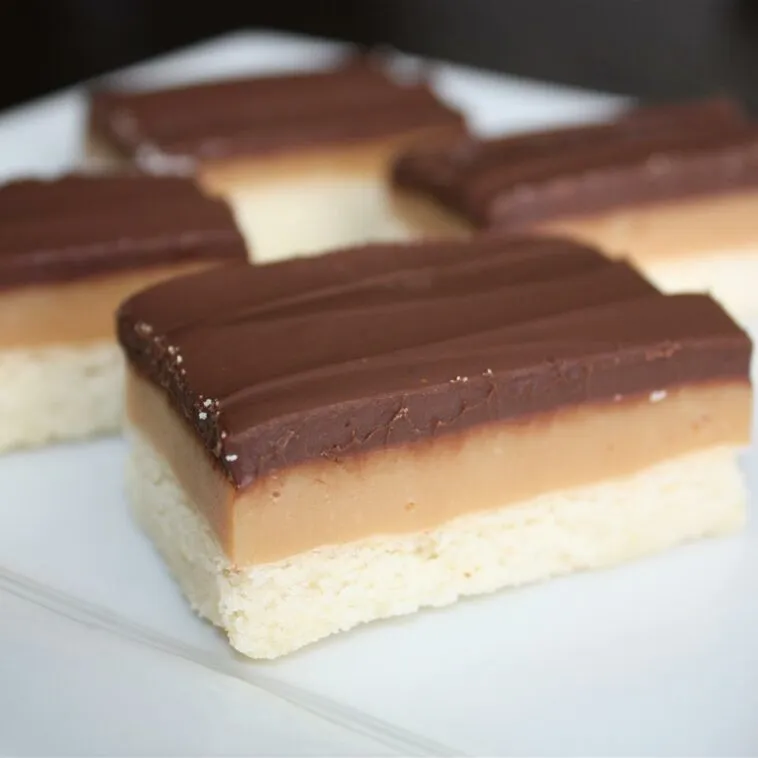

Home
Caramel Shortbread Squares

Description:
Make caramel shortbread (aka millionaire's shortbread) with this easy recipe.
With a buttery shortbread crust, a firm caramel center,
and a dreamy milk chocolate topping, these squares are so rich you'll
want to cut them small!
Ingredients:
Shortbread:
- 1 ¼ cups all-purpose flour
- ⅔ cup unsalted butter, softened
- ¼ cup white sugar
Caramel:
- ½ cup unsalted butter
- ½ cup packed light brown sugar
- ½ cup sweetened condensed milk
- 2 tablespoons light corn syrup
Chocolate Topping:
- 1 ¼ cups milk chocolate chips
Steps:
- Preheat the oven to 350 degrees F (175 C).
- Make the shortbread: Mix flour, softened butter,
and sugar together in a medium bowl until well blended and crumbly.
Press into the bottom of a 9-inch square baking pan.
- Bake in the preheated oven until dry and light golden brown, about 20 minutes.
- Make the caramel: Bring butter, brown sugar, condensed milk,
and corn syrup to a boil in a saucepan over medium heat. Boil for 5 minutes,
then remove from the heat and beat vigorously with a wooden spoon for about
3 minutes. Pour over baked crust (crust can be either warm or cool).
Let sit at room temperature until caramel begins to firm up, 2 to 3 hours.
- Microwave chocolate in a microwave-safe bowl on high for 1 minute,
then stir and continue to heat and stir in 20-second intervals until chocolate
is melted and smooth.
- Pour chocolate over caramel layer and spread evenly to cover completely.
Chill in the refrigerator until chocolate is set, about 30 minutes.
Cut into 1-inch squares.